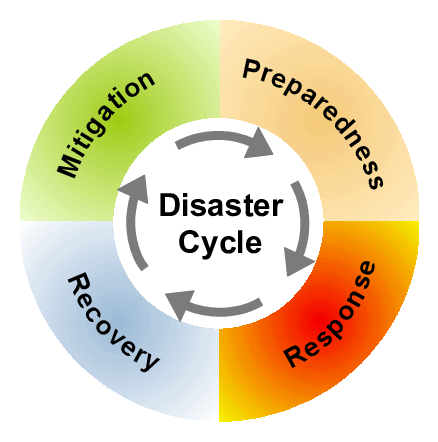

The key to reducing loss of life, personal injuries, and damage from natural disasters is widespread public awareness and education.
Being prepared can reduce fear, anxiety, and losses that accompany disasters. Communities, families, and individuals should know what to do in the event of a fire and where to seek shelter during a powerful storm. This helps reduce many of the negative effects and traumas related to disasters.
